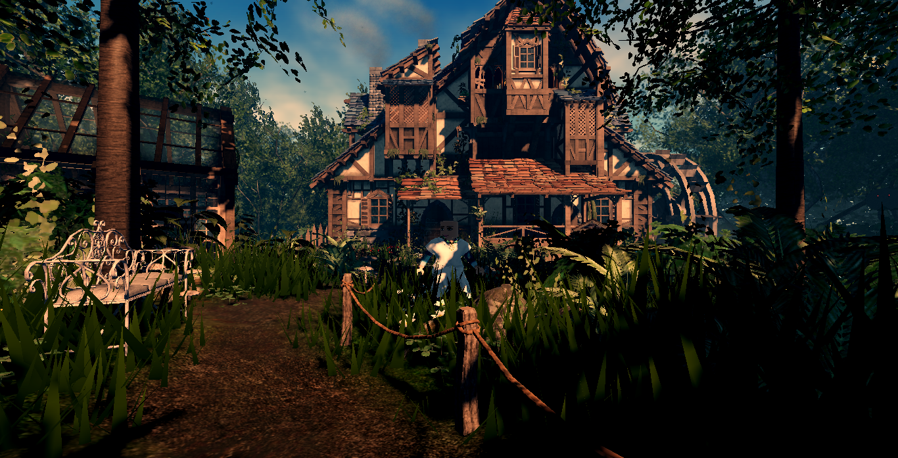
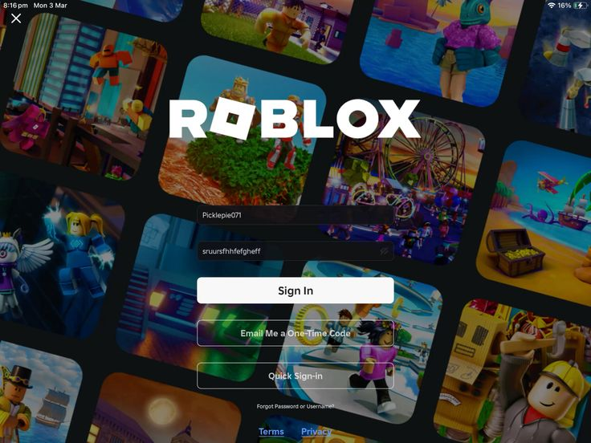
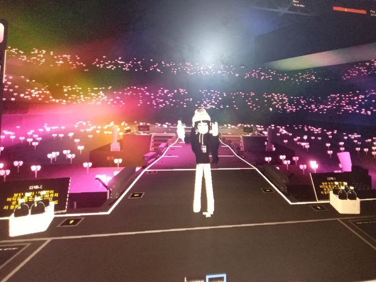
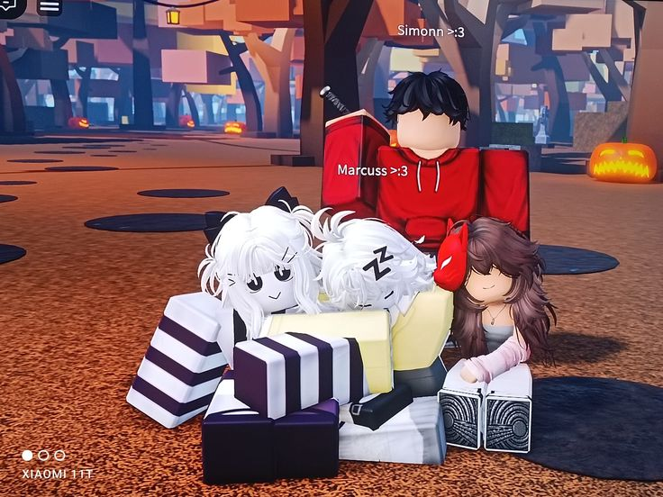

Roblox
Kalian pasti sudah tidak asing dengan judul di atas, Roblox merupakan salah satu game yang masih eksis sampai saat ini. Gim ini hampir dimainkan oleh anak-anak zaman sekarang, bukan hanya anak-anak, remaja bahkan orang yang sudah dewasa juga bermain game ini. Banyak orang bermain Roblox karena platform ini menawarkan kebebasan berkreasi dan pengalaman bermain yang sangat beragam, yang tidak terbatas pada satu genre atau jenis permainan saja. Pengguna bisa memilih dari jutaan game buatan komunitas mulai dari simulasi kehidupan, petualangan, roleplay, hingga kompetisi bertema futuristik yang semuanya tersedia dalam satu aplikasi. Selain itu, Roblox juga memberikan kesempatan bagi pemain untuk menjadi kreator, di mana mereka bisa merancang dunia virtual mereka sendiri menggunakan Roblox Studio, bahkan menghasilkan uang melalui sistem monetisasi yang disediakan.
Namun, gim ini juga masih dianggap sebagai game anak-anak. Menganggap Roblox sebagai sekadar permainan anak-anak dengan tampilan sederhana jelas merupakan pandangan yang terlalu sempit. Di balik tampilannya yang mungkin terlihat simpel, Roblox menyimpan dunia yang jauh lebih kompleks dan kreatif. Yuk kita lihat seberapa menariknya gim ini!Grafik Berkualitas Tinggi
Meskipun kerap dianggap memiliki grafis yang sederhana, Roblox sebenarnya menawarkan kualitas visual yang tinggi dan dapat disesuaikan dengan kebutuhan masing-masing pembuat gim. Melalui Roblox Studio platform pengembangan resmi dari Roblox pengguna dapat memanfaatkan berbagai fitur grafis canggih, seperti pencahayaan realistis, efek partikel dinamis, serta tekstur dan material yang mendetail. Kemampuan ini memungkinkan kreator untuk menciptakan dunia virtual yang kompleks dan imersif, bahkan setara dengan gim profesional jika dimanfaatkan secara maksimal. Kualitas grafis dalam Roblox sepenuhnya ditentukan oleh kreativitas dan keterampilan pembuatnya. Ada yang memilih gaya visual sederhana seperti low-poly, namun tidak sedikit pula yang menghadirkan tampilan sinematik dengan pencahayaan dramatis dan animasi halus. Hal inilah yang menjadi keunikan Roblox satu platform yang menyediakan ruang tak terbatas bagi ekspresi visual, mulai dari yang paling sederhana hingga yang paling canggih sekalipun.
Pilihan Game yang Beragam
Salah satu daya tarik utama Roblox terletak pada ragam pilihan gim yang tersedia di dalam platform ini. Dengan jutaan gim yang dibuat langsung oleh pengguna dari seluruh dunia, Roblox menawarkan pengalaman bermain yang sangat bervariasi mulai dari simulasi kehidupan, petualangan, aksi, balapan, hingga permainan edukatif yang interaktif. Setiap gim memiliki gaya, aturan, dan dunia virtualnya sendiri, sehingga pemain tidak akan pernah kehabisan hal baru untuk dijelajahi. Keberagaman ini tidak hanya membuat Roblox cocok untuk berbagai kelompok usia, tetapi juga memungkinkan pemain untuk menemukan jenis permainan yang sesuai dengan minat dan preferensi masing-masing. Dalam satu platform, pengguna dapat berpindah dari satu dunia ke dunia lain dengan mudah, menjadikan Roblox sebagai ruang hiburan digital yang dinamis dan selalu berkembang
Event dan Kolaborasi besar-besaran
Salah satu aspek yang membuat Roblox begitu menarik adalah kemampuannya untuk menyelenggarakan event virtual besar-besaran, yang sering kali melibatkan kolaborasi dengan brand terkenal, selebritas, bahkan karya seni populer. Event-event ini tidak hanya sekadar hiburan semata, tetapi juga menjadi ajang promosi dan interaksi yang luar biasa, baik bagi penggemar maupun kreator. Salah satu jenis event yang paling ikonik adalah konser virtual, di mana Roblox mengundang artis besar untuk tampil langsung dalam bentuk avatar digital. Ini memberikan pengalaman yang unik dan imersif bagi para pemain, yang bisa "menghadiri" konser tanpa harus meninggalkan rumah. Selain konser, Roblox juga sering mengadakan event kolaborasi dengan berbagai merek atau film terkenal, seperti event tematik berdasarkan film blockbuster atau permainan edisi terbatas yang berkaitan dengan produk tertentu.
Komunitas Global yang Aktif
Di dalam Roblox, interaksi sosial menjadi bagian penting dari pengalaman bermain. Pemain bisa berkomunikasi melalui fitur obrolan, bergabung dalam gim multipemain, mengikuti komunitas tertentu, atau bahkan membangun jaringan pertemanan lintas negara. Komunitas ini tidak terbatas hanya pada pemain, tetapi juga mencakup para kreator yang saling berbagi ilmu, tips pengembangan gim, hingga bekerja sama dalam proyek-proyek besar. Keaktifan komunitas juga tercermin dalam forum diskusi, grup penggemar di media sosial, hingga berbagai kanal YouTube dan Discord yang secara khusus membahas konten Roblox. Tidak jarang, para pemain membuat fan art, video reaksi, atau bahkan membuat serial mini dalam Roblox sebagai bentuk ekspresi dan apresiasi terhadap gim atau kreator favorit mereka.